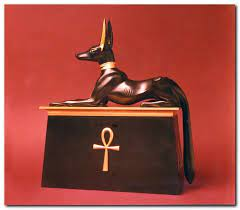
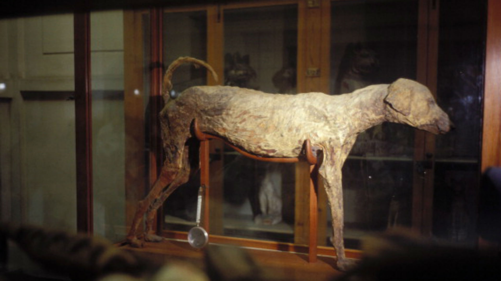
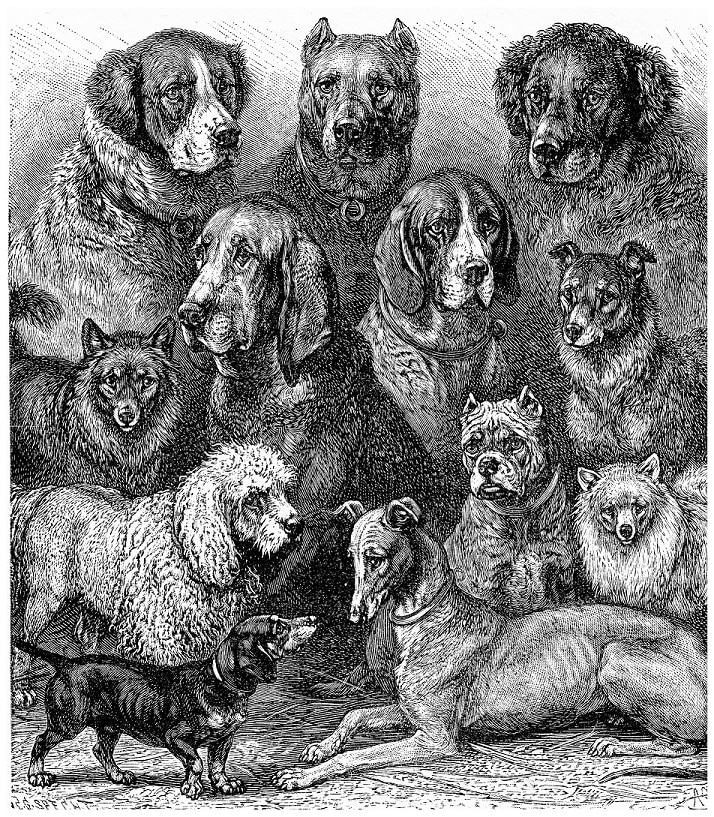

Dogs have had a lot of history going all the way back to egypt.
By Unknown from PxHere
Egypt used dogs to hunt for more food they where very useful and sometimes when a man loved his dog so much the dog would get buried with the man.
By Unknown from The New Arab
Here are a bunch of dogs throughout the years
By Unknown from Pet Butler
"The earliest remains generally accepted to be those of a domesticated dog were discovered in Bonn-Oberkassel, Germany. Contextual, isotopic, genetic, and morphological evidence shows that this dog was not a local wolf. The dog was dated to 14,223 years ago and was found buried along with a man and a woman, all three having been sprayed with red hematite powder and buried under large, thick basalt blocks. The dog had died of canine distemper. Earlier remains dating back to 30,000 years ago have been described as Paleolithic dogs, but their status as dogs or wolves remains debated because considerable morphological diversity existed among wolves during the Late Pleistocene. This timing indicates that the dog was the first species to be domesticated in the time of hunter gatherers, which predates agriculture. DNA sequences show that all ancient and modern dogs share a common ancestry and descended from an ancient, extinct wolf population which was distinct from the modern wolf lineage. The dog is a classic example of a domestic animal that likely travelled a commensal pathway into domestication. The questions of when and where dogs were first domesticated have taxed geneticists and archaeologists for decades. Genetic studies suggest a domestication process commencing over 25,000 years ago, in one or several wolf populations in either Europe, the high Arctic, or eastern Asia. In 2021, a literature review of the current evidence infers that the dog was domesticated in Siberia 23,000 years ago by ancient North Siberians, then later dispersed eastward into the Americas and westward across Eurasia, with dogs likely accompanying the first humans to inhabit the Americas." (Wikipedia (Dogs))